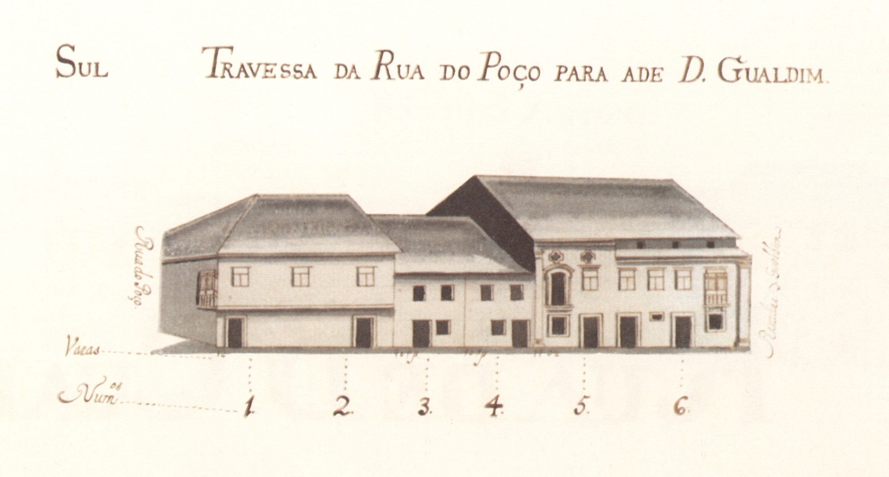
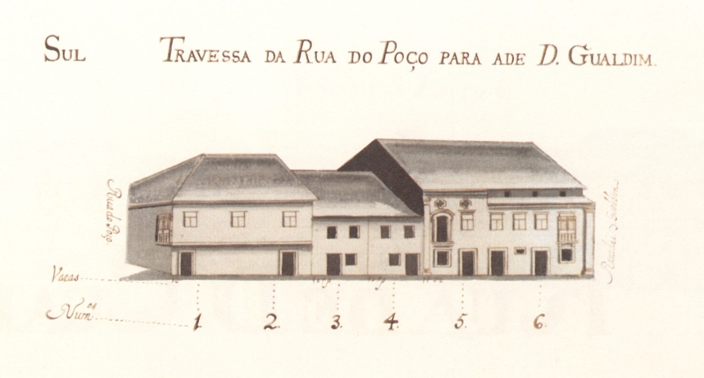

15 Travessa da Rua do Poço para a de D.Gualdim
Fragmento da actual rua D. Afonso Henriques , entre as ruas D. Gonçalo Pereira e D. Gualdim Pais .
Se na sua pequeníssima extensão poucas casas há (1 do lado Norte e 4 do lado Sul, todas prazos do Cabido ) não deixa de ter mesmo assim dois edifícios interessantes: a dos prazos 5 e 6, boa casa de pedra com uma notável porta varanda dos finais de seiscentos; e a dos números 1 e 2 por ser uma casa muito grande com o piso superior sobradado, à maneira antiga.
Curiosos são ainda os prazos n.ºs 3 e 4 onde se vêem 2 habitações com «porta ladeada de uma janela» que eram frequentes, sobretudo, nas ruas existentes no exterior das muralhas.
Alargadas nos finais do séc. XIX, não se conservam hoje nenhuma das casas desta rua existentes no Mappa.
Visão original
 
 Visão atual


Casas
1 Pertencem ao n.º 21 da Rua do Poço , para onde têm a frontaria e serventia principais. Foram unidas no ano de 1609 .
2 Pertencem ao n.º 21 da Rua do Poço , para onde têm a frontaria e serventia principais. Foram unidas no ano de 1609 .
3 Os herdeiros de Francisco Almeida Cabral e de sua mulher, D. Josefa Luísa de Araújo 180 reis e 2 galinhas As casa n.º 2 e 3 estiveram unidas, num só prazo, ao n° 4, entre os anos de 1533 e 1597 .
4 Os herdeiros de Francisco Almeida Cabral e de sua mulher, D.Josefa Luísa de Araújo 200 reis e 2 galinhas As casa n.º 2 e 3 estiveram unidas, num só prazo, ao n° 4, entre os anos de 1533 e 1597 .
5 Miguel Luís Dias, escrivão dos casamentos da cidade de Braga, e sua mulher Adriana Maria Ribeiro 330 reis e 2 galinhas O n.º 5 situa-se defronte da porta do açougue . Ao n° 6, pertence uma casa terceira da rua que vai desta travess a para Santiago . Possui frontaria para a Rua de D. Gualdim.
6 Miguel Luís Dias, escrivão dos casamentos da cidade de Braga, e sua mulher Adriana Maria Ribeiro 450 reis e 2 galinhas O n.º 5 situa-se defronte da porta do açougue . Ao n° 6, pertence uma casa terceira da rua que vai desta travess a para Santiago . Possui frontaria para a Rua de D. Gualdim.
7 Correspondem ao n° 7 da Rua de D. Gualdim , para onde têm a frontaria e serventia principais.
8 Correspondem ao n° 7 da Rua de D. Gualdim , para onde têm a frontaria e serventia principais.
9 Corresponde ao n° 22 da Rua do Poço , para onde tem a frontaria principal.